AIone Lab / Ideas into practice
Small experiments.
Real possibilities.
A hands-on lab exploring AI, automation, and the physical world. Practical tools. Working prototypes. Everything learned along the way.
 From the workbench
From the workbenchMeet your next AI companion.
Keep your AI close.
Private documents. Local intelligence.
Explore Local RAG ↗ 02 / VOICEGive ideas a voice.
Real-time conversations on Raspberry Pi.
Build a voice agent ↗ 03 / ROBOTICSBring code to life.
Small robots with a little personality.
Meet Stack Chan ↗ 04 / HARDWAREA terminal of your own.
A physical home for your AI assistant.
See the AI terminal ↗The project notebook
Built. Tested. Documented.
Follow an idea from first experiment
to something you can use.
Private Local RAG
Secure document querying and retrieval workflows for internal knowledge systems.

Hermes Voice Agent
Real-time speech workflows with STT, LLM orchestration, and TTS on low-cost hardware.
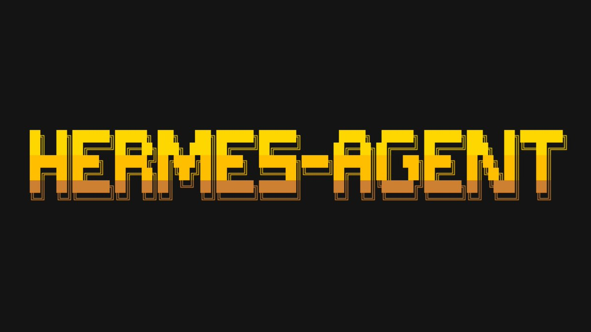
M5Stack Chan Robot
A mobile LLM companion with expressions, voice interaction, memory, and private AI expansion.

AI Agent Terminal
An all-in-one voice AI terminal connected to cloud or local models for coding and logs.
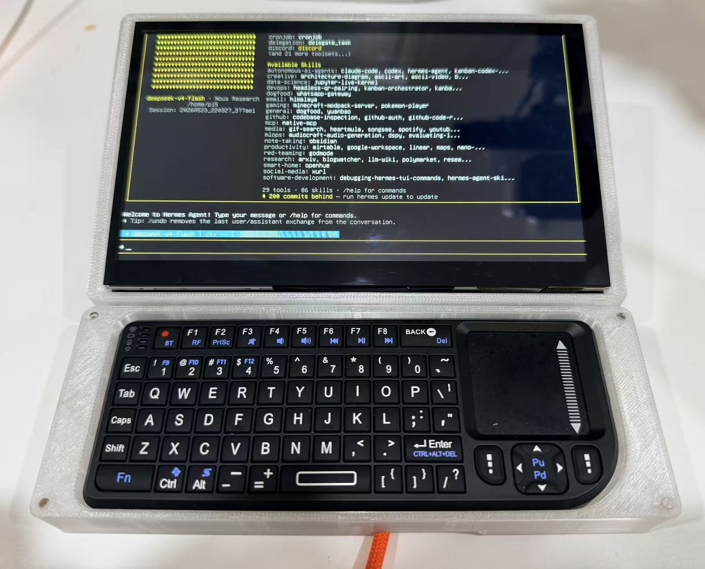
Local AI Documents
Custom local-first AI systems for quotations, delivery orders, receipts, tax summaries, and daily business spreadsheets.
Reachy Mini x Hermes
Build a physical AI companion with Reachy Mini, Hermes Agent voice interaction, Obsidian memory, and future RAG workflows.
Personal Knowledge Base
A living knowledge system managed by local or remote AI Agents for classification, semantic search, and connected documents.
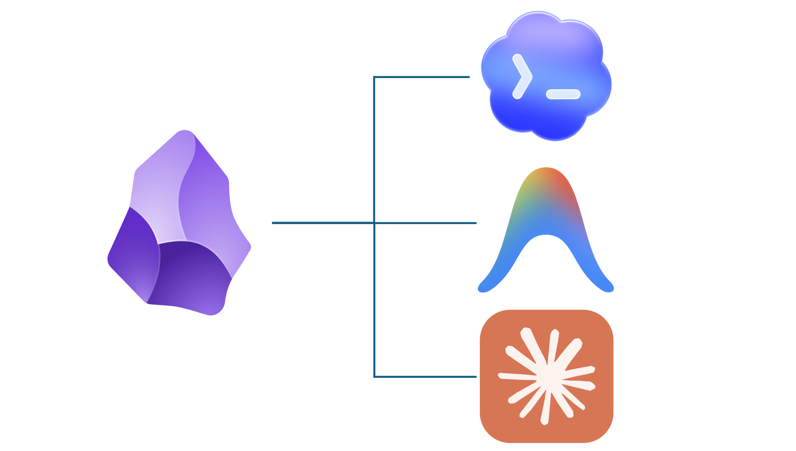
Cloudflare Backend
Serverless foundations for API routing, protected keys, and deployable AI app backends.
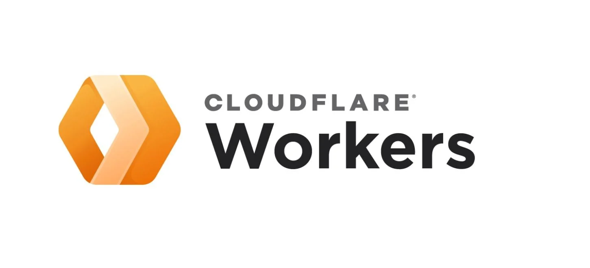
Hermes Agent Voice Mode
Step-by-step macOS setup to add real-time STT and TTS voice interaction to Hermes Agent.
Github Pages
Deploy a MkDocs static site on GitHub Pages and let an AI Agent manage the content autonomously.
AI Knowledge Wiki
Let an AI Agent manage your personal Obsidian knowledge base — ingest, query, and maintain your second brain automatically.
AIGC Prompt Gallery
Curated collection of AI-generated content prompts with full images and copyable prompts.

Mini Tank
Assemble a compact ESP32-C3 tracked tank and upload starter firmware for web control and obstacle avoidance.
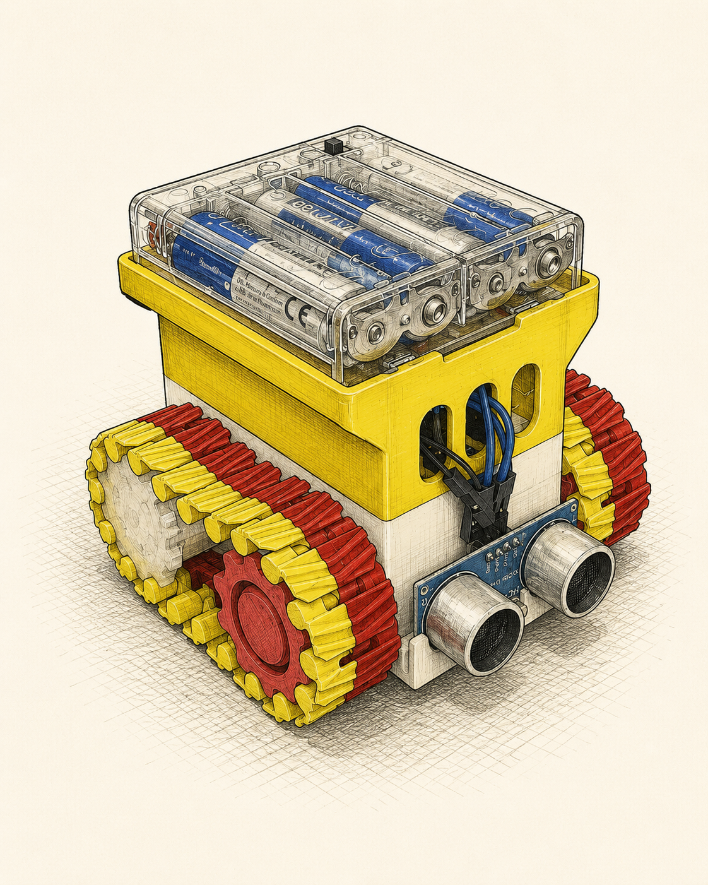
NotebookLM Guide
Learn how to use Google's AI note-taking tool to build your personal knowledge base.
Prompt Generator
Instantly generate high-quality, customized AI prompts tailored to your specific needs.
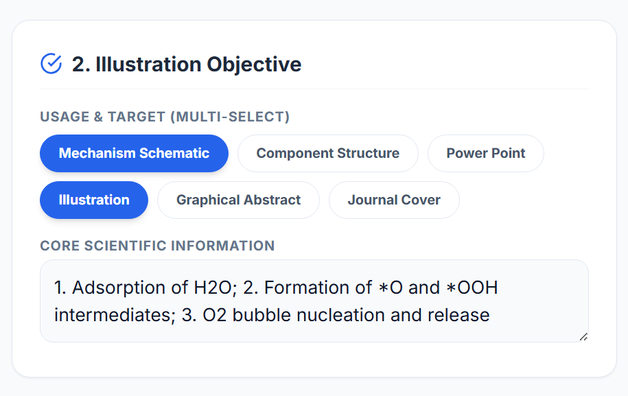
n8n Concepts Workflow
Build 24/7 non-stop enterprise automation hubs by orchestrating nodes and connecting applications.

Vibe Coding
Interactive programming and exploring the limits of AI-assisted coding.
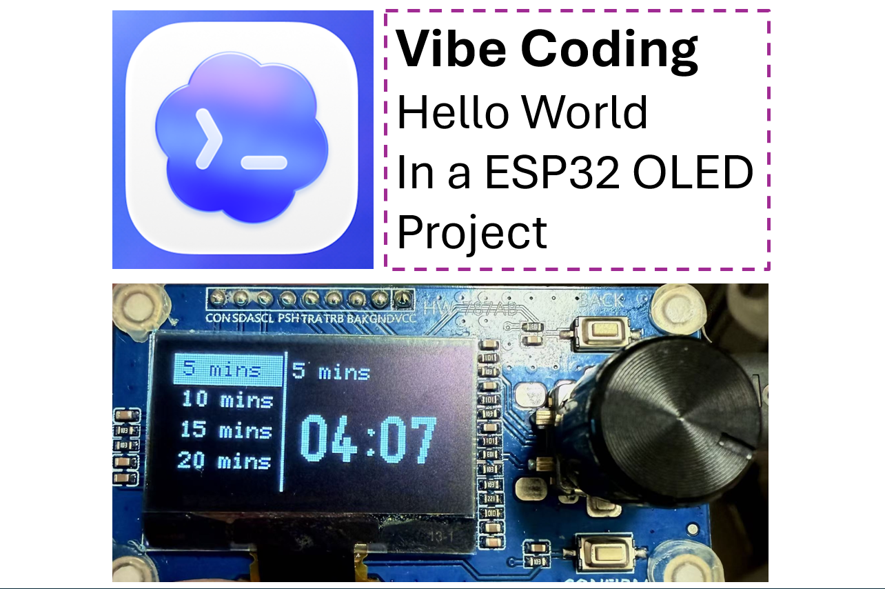
Raspberry Pi Integration
Integrating hardware with AI and automation tools for physical-world interactions.
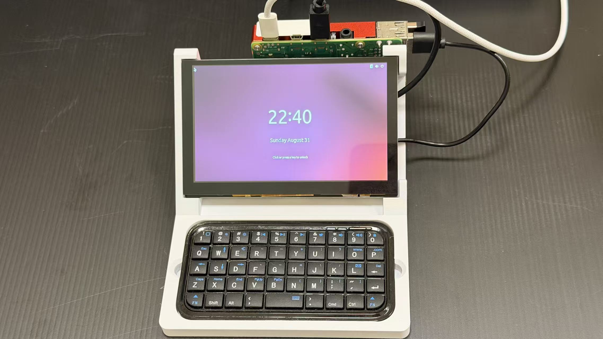
Time Value of Money
Interactive TVM calculator for present value, future value, annuities, and amortization schedules.
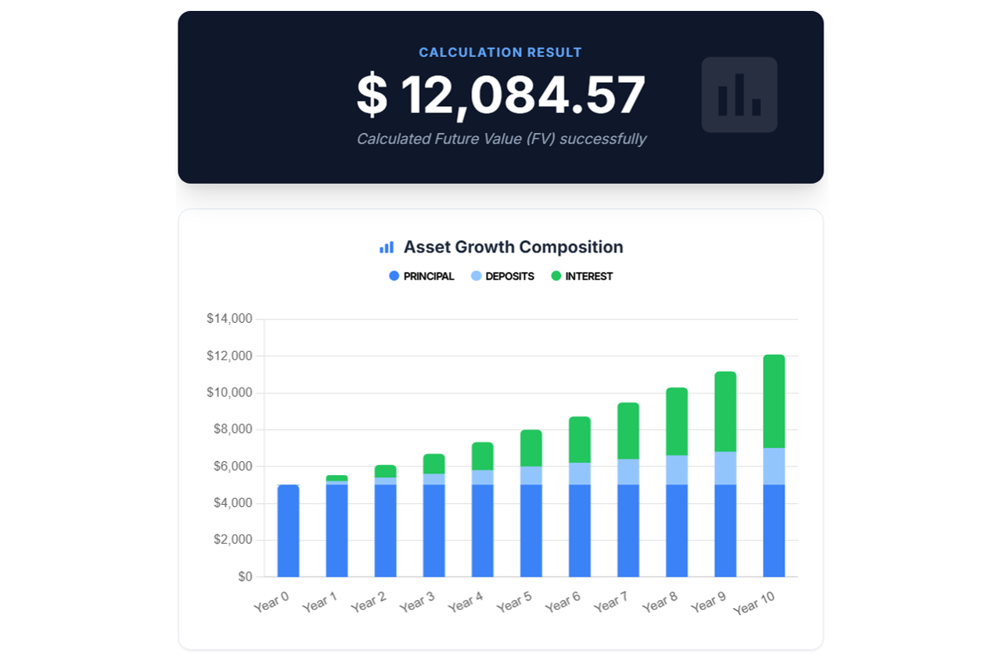
Unit Converter
Fast unit conversion across length, weight, energy, area, pressure, and temperature.
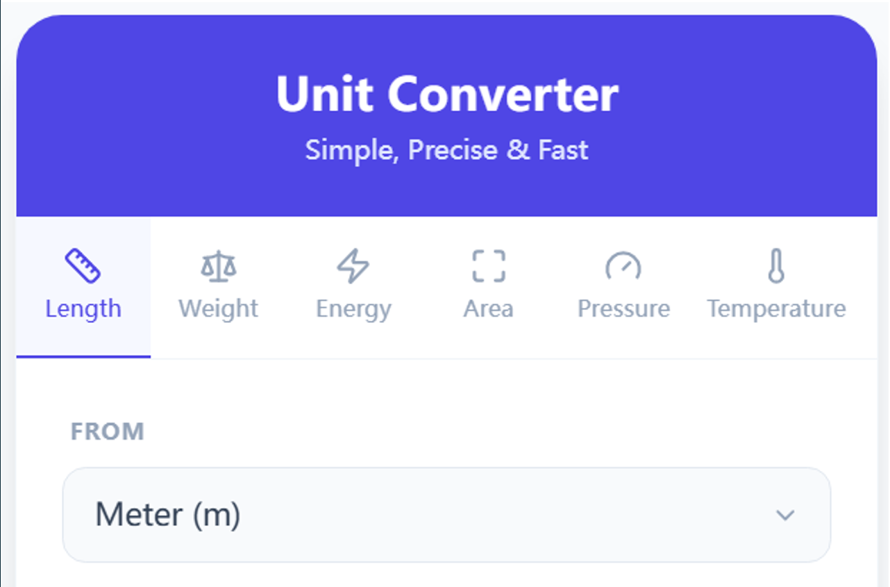
Screen Project
Custom screen menu systems and interfaces for embedded projects.
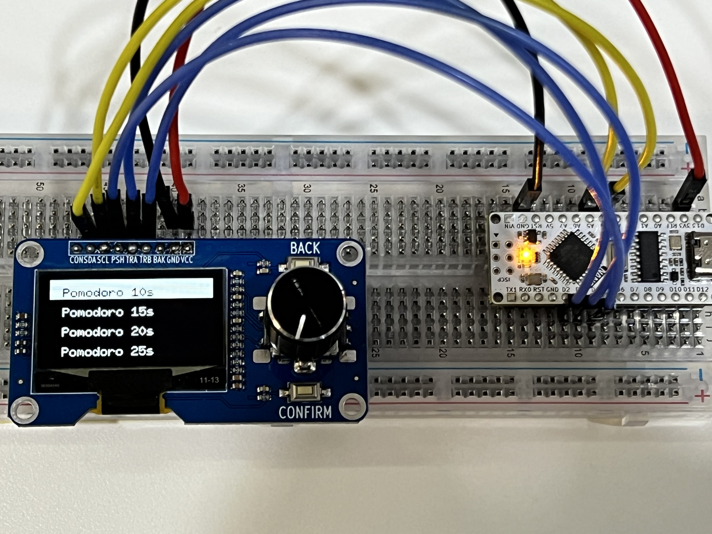
Pomodo with case
Pomodoro timer built with ESP32, knob, and 1.3 OLED screen.
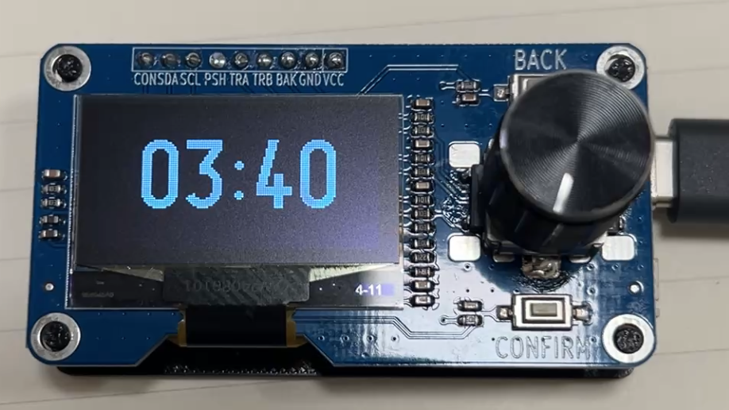
Pomodo
Another variant of the Pomodoro timer project focusing on different OLED displays.
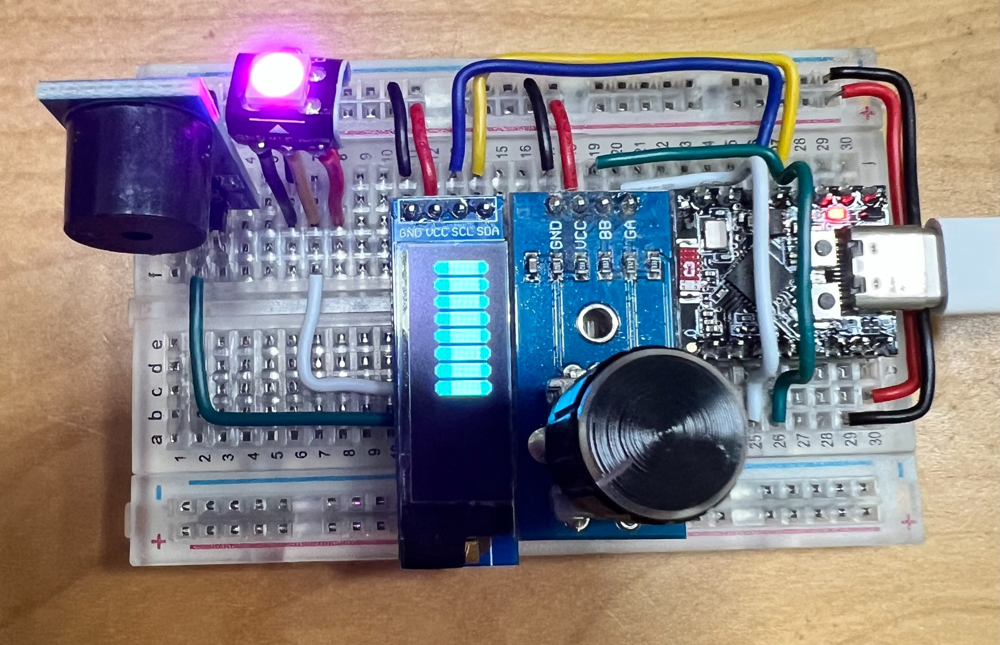
Pomodoro 0.91 OLED
Compact Pomodoro timer utilizing a 0.91 inch OLED screen.
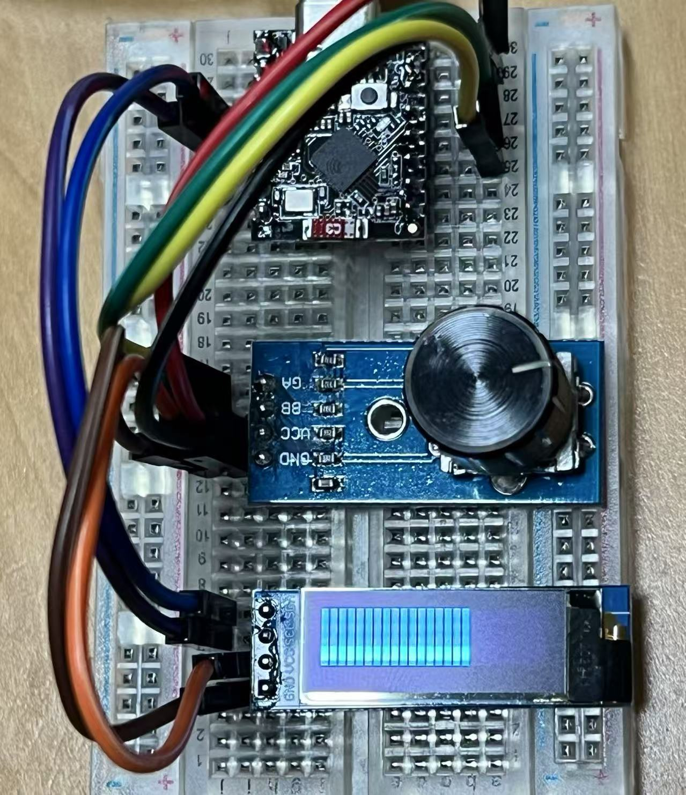
LeRobot
Exploring robotics and AI control with the LeRobot arm project.
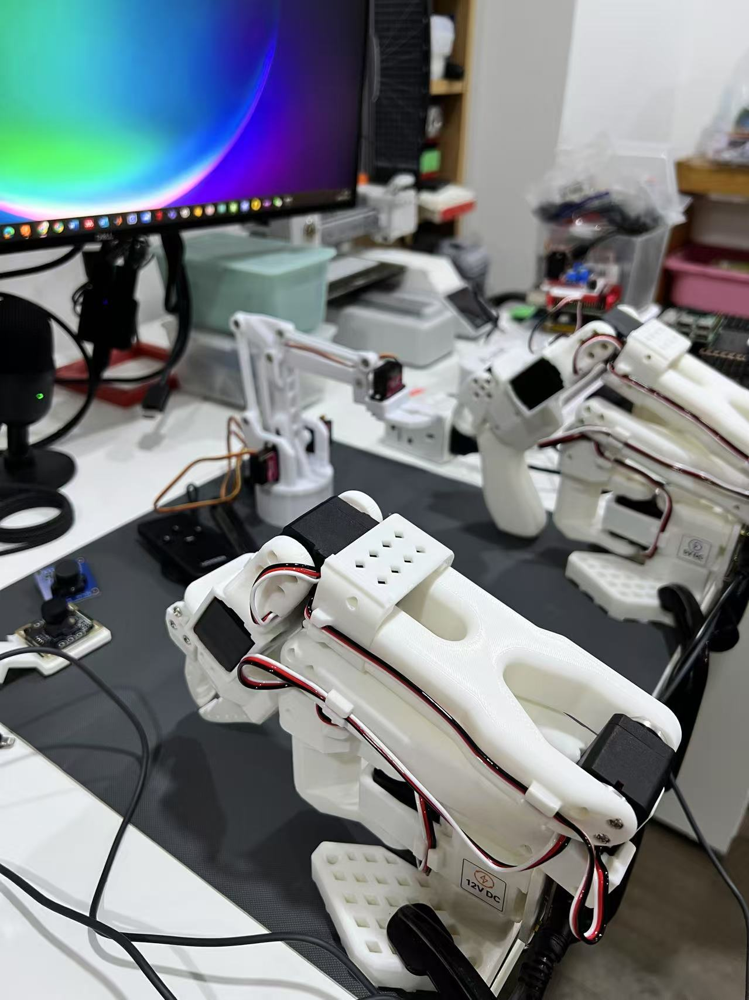
Quadruped
Building and programming a four-legged walking robot.
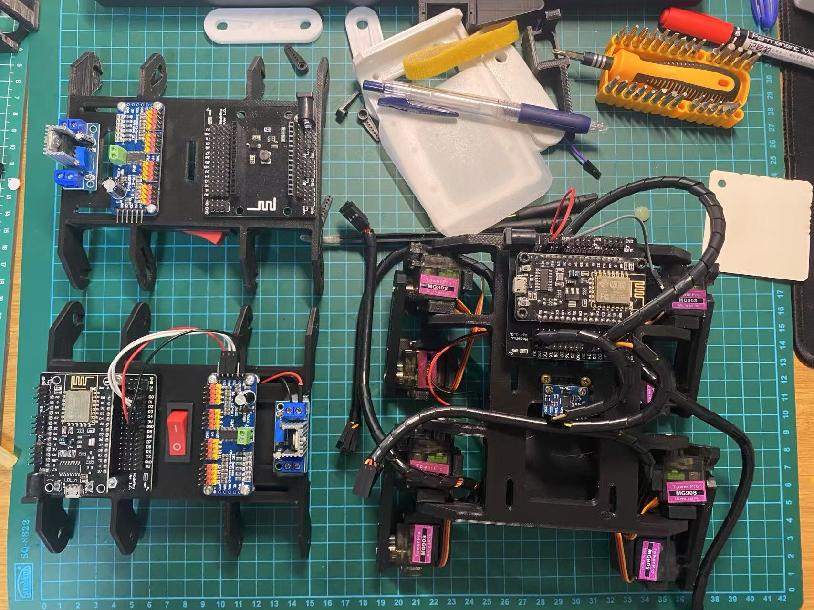
Always a work in progress